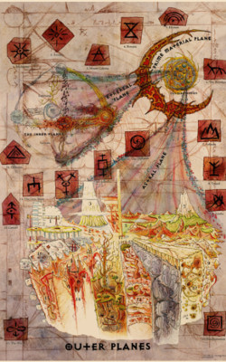
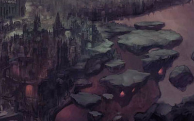
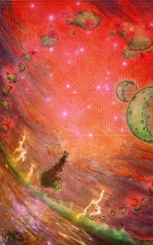
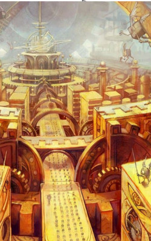

Une cosmogonie quelque peu réductrice mais communément admise, au moins pour son caractère illustratif, affirme qu’à l’origine était les éléments, la matière brute des plans. Ces éléments forment encore aujourd’hui les plans élémentaires, ou plans intérieurs. Il y a quatre plans élémentaires purs : les plans du Feu, de la Terre, de l’Eau et de l’Air. A ces quatre-là s’ajoutent le plan élémentaire de l’énergie positive, énergie vitale et rayonnante, et le plan de l’énergie négative, un puît affamé drainant toute autre énergie ; à commencer par la vie. A la rencontre de ces éléments primordiaux se trouvent des plans intermédiaires dit paraélémentaires, quand il s’agit du mélange de deux plans élémentaires voisins (Eau et Terre donnent Vase, Terre et Feu, Magma, Feu et Air, Fumée et enfin Air et Eau donnent Glace), ou bien plans quasi-élementaires, à la rencontre d’un élément et d’une énergie (les énergies positives et négatives se mêlent avec leurs autres éléments pour donner respectivement la Vapeur et le Sel pour l’Eau, les Minéraux et la Poussière pour la Terre, la Radiance et la Cendre pour le Feu, et enfin la Foudre et le Vide pour l’Air).
Combinant cette matière en de multiples formes, le plan éthéré, ou plan des possibles, est un plan transitoire contenant des mondes éphémères issus de songes ou de sorts, des demi-plans en lente gestation, et d’autres merveilles cachées au milieux d’épaisses brumes reliant les plans élémentaires au plan primaire.
Le plan matériel primaire est souvent considéré comme le plan de la réalité, le point de départ des croyances, emplies de mondes multiples abritant tout autant de civilisations souvent ignorantes de la réalité des plans, mais dont la Foi abreuve les Puissances divines qui peuplent les plans extérieurs. Quelques exemples connus de ces mondes souvent un peu reculés sont les mondes d’Abeir Toril, de la Taerre, ou de Krynn. Ils sont généralement peuplés d’humains, d’elfes, de nains et autres races de mortels. Nombre de ces mortels prient des Dieux et croient en divers paradis. Leurs croyances sont acheminées à travers le plan Astral vers les plans extérieurs, où d’aucuns prétendent qu’elles prennent forme, ou tout au moins renforcent la puissance de certaines croyances.
Le plan Astral est donc le second plan de transition, reliant les mondes primaires aux plans extérieurs. C’est le plan des idées et de la pensée, hors du temps. Un immense vide argenté parcouru de conduits astraux véhiculant les âmes des morts vers leur nouvelle existence en tant que suppliants du plan ou royaume le plus proche de leur croyance. Ces derniers vivent dans leur plan reflétant le mieux leurs croyances, desquelles ils se rapprochent progressivement jusqu’à se fondre dans celles-ci. C’est aussi dans le plan astral que dérivent les carcasses des dieux oubliés, devenus les refuges improbables des cités de githyanki, cette race à la fois conquérante et individualiste.
De l’autre côté du plan
astral, on arrive dans le
Grand Anneau des plans
extérieurs, ou plans des
croyances. L’aboutissement
de toute cette
construction. C’est
là que les croyances
prennent formes pour
se livrer bataille. Les
17 plans extérieurs
s’organisent sur deux axes orthogonaux
de
moralité, chacun
possédant
sa propre coloration,
son propre
alignement.
Ainsi,
les plans supérieurs, dédiés au Bien, et protégés
par toutes sortes de célestiaux, s’opposent
aux plans inférieurs, apologie du Mal, et peuplés
de fiélons en guerre perpétuelle. Cette
Guerre Sanglante, qui déchire les plans inférieurs
et déborde fréquemment sur les plans
voisins oppose la Loi, représentée dans sa coloration
maléfique par les diables des Neuf
Enfers (aussi nommé baatezus), au Chaos,
représenté dans les plans inférieurs par les démons
des Abysses (aussi nommés tanar’ri), le
tout sous l’oeil intéressé des damnés (ou Yugoloths),
fiélons neutre mauvais issus de la Gaste
Grise.
Cette division entre la Loi et le Chaos se
retrouve aussi dans les plans bons ou neutre.
La Loi est le symbole de la Raison, de la Discipline,
de la Méthode, de la Stabilité et de la
primauté de la Société sur l’individu, tandis
que le Chaos représente à l’inverse l’Imprévu,
le Changement, l’Adaptabilité, le Désordre,
la Liberté et la primauté de l’Individu sur la
société, de l’exception sur la norme.
Ainsi les plans extérieurs s’organisent en
une grande roue, selon les axes Loi/Chaos et
Bien/Mal.


Partant de la Loi (traditionnellement
représentée à gauche) avec le plan de
Méchanus (Loyal Neutre), peuplé de Modron,
on remonte vers le Bien (traditionnellement
représenté en haut, donc), en passant par
l’Arcadie puis le Mont Céleste (plan Loyal
Bon) et ses archons, pour atteindre les
paradis jumeaux de Bytopie et enfin
l’Elysée (plan Neutre Bon), avant de
continuer vers le Chaos avec la Terre
des Bêtes et l’Arborée (plan Chaotique
Bon), peuplée d’eladrin. On redescend
alors, en traversant l’Ysgard,
aux Limbes (plan Chaotique Neutre), territoire
des Slaadi et des Githzerai, avant de chuter en Pandemonium
puis dans les Abysses (Chaotique Mauvais), repaire
des cruels démons que sont les Tanar’ris.
De là, on reviens vers la Loi en traversant les
Carcères, puis la Gaste Grise (Neutre Mauvais),
que même les habitants natifs, les damnés,
ou Yugoloths, ont fini par abandonner au
profit de la Géhenne, qui elle-même mène à
Baator ; aussi appelé les Neuf Enfers, et peuplée
des méthodiques et tortueux diables que
sont les baatezus. Il n’y alors qu’à travers les
champs de bataille de l’Achéron pour revenir
sur Méchanus.
Au centre de ce Grand Anneau des Plans,
se trouve l’Outreterre, le plan de la Neutralité,
dont les garants sont les mystérieux rilmanis,
immortels métalliques garants de l’Equilibre.
Un écho de ce grand anneau se manifeste en
ce plan par une série de Villes-Portes, anneau
de villes et villages proches d’un des autres
plans extérieurs, dont ils reflètent l’influence.
Chacune de ces villes portes possède un portail
permanent vers le plan qu’elle côtoie ainsi.
On pourra notamment citer Sylvanus, la ville
porte d’Arborée, réputée pour ses fêtes, ou la
dangereuse Curst, à proximité des Carcères. Au
centre de l’Outreterre se dresse la Spire, un pic
montagneux de taille infinie, au dessus duquel
on peut apercevoir, flottant, la silhouette torique
de Sigil, véritable carrefour des plans.